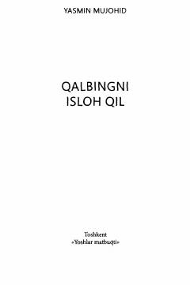

QIQalbni dunyo g'amlaridan xalos etib, Allohga qaytarish yo'llari haqida.
Bu kitob Yasmin Mujohidning 'Reclaim Your Heart' asarining o'zbek tilidagi tarjimasi bo'lib, qalbni dunyo bezaklaridan xalos etish va uni haqiqiy Egasiga topshirish yo'llarini o'rgatadi. Asar gunoh va xatolardan saqlanish, umid va poklanish mavzularini islomiy nuqtai nazardan yoritadi. Kitob o'quvchini o'z-o'zini anglashga, samimiyroq va erkinroq insonga aylanishga undaydi.